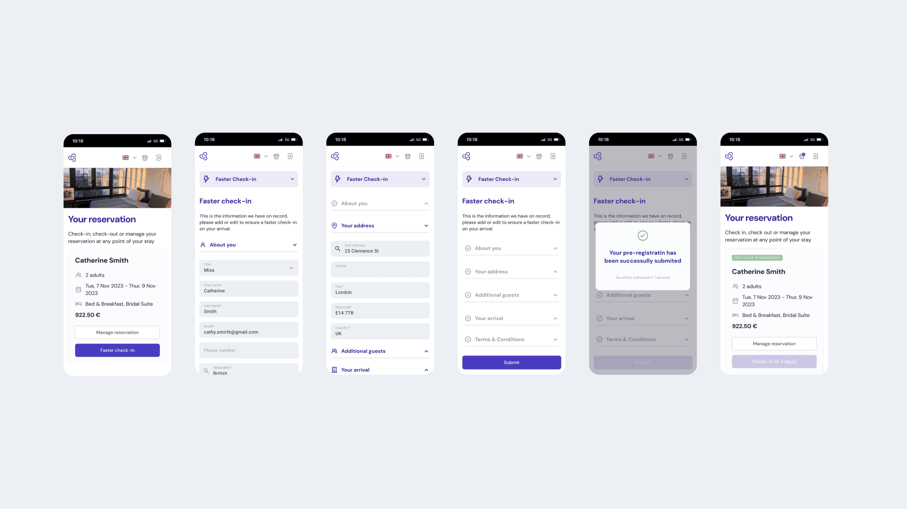
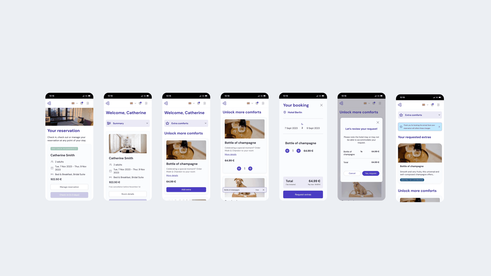
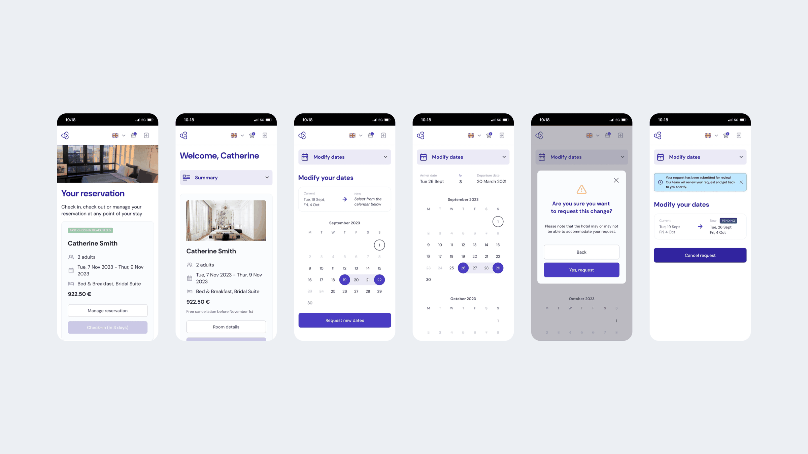
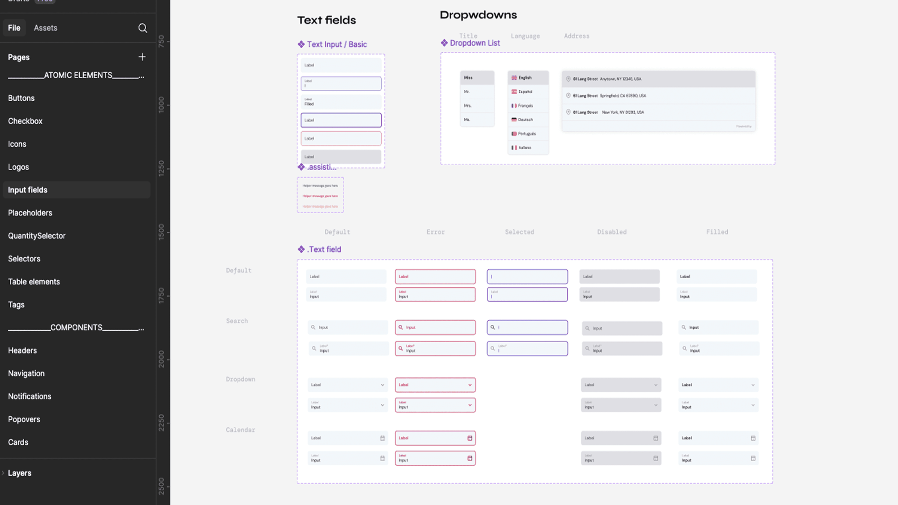
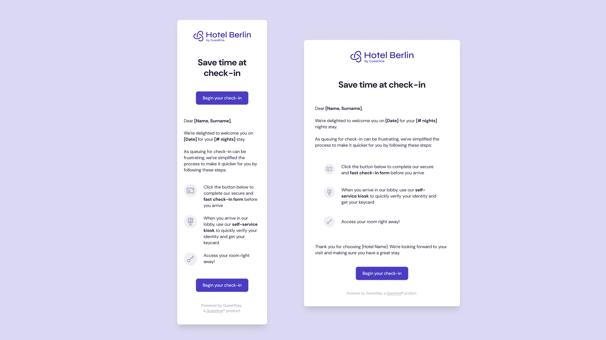

GuestStay Portal
Un portal web white-label que permet als hostes fer la part avorrida abans d'arribar, perquè l'arribada duri menys d'un minut al quiosc.

D'un cop d'ull
El problema
Els hostes creien que el pre-check-in en línia era el check-in complet i després l'havien de repetir a l'hotel. Les reserves d'OTAs ni tan sols rebien la invitació.
El meu rol
Única dissenyadora de producte: entrevistes amb hotelers al Regne Unit i Alemanya, tests de primera impressió, fluxos, UI, UX writing i el sistema de disseny compartit. Amb un PM, un dev lead i 4 enginyers.
Impacte
Més ús del pre-check-in, check-in al quiosc en menys d'1 minut per a qui arriba preparat, nous ingressos per vendes abans de l'arribada i menys peticions de factures als hotels.
Habilitats
Eines
Maze
Resultats
<1 min
de check-in al quiosc per a qui va fer el pre-check-in
4
tasques en un sol lloc: pre-check-in, extres, reserves, factures
1
sistema de disseny compartit amb el Quiosc i el motor de reserves
2
mercats investigats, Regne Unit i Alemanya
Context
Els hostes que completaven el pre-check-in en línia sovint pensaven que ja estaven registrats, i després a l'hotel els demanaven les mateixes dades un altre cop. A més, el portal només funcionava amb reserves directes. OTAs com Booking.com sovint amaguen l'email real de l'hoste, així que els hotels ni tan sols podien enviar la invitació.
Què vaig descobrir
Vaig entrevistar hotelers al Regne Unit i Alemanya i vaig fer tests de primera impressió del flux de pre-check-in amb possibles hostes a Maze.
- Els hostes donaven per fet que el pre-check-in era el check-in complet.
- Introduir dades a mà provocava errors que el personal havia de corregir després.
- Els hostes sovint contactaven l'hotel després de l'estada només per demanar la factura.
- Els hotels volien la seva pròpia marca i proves del ROI.
- Els portals de la competència sobretot digitalitzaven formularis, amb poques vendes addicionals i poca personalització.
Què vaig fer
Vaig dissenyar un únic portal responsive que cobreix tota l'estada:
- Un pre-check-in que compta de debò. Les dades que s'emplenen en línia apareixen ja al quiosc, així que l'arribada és una confirmació ràpida.
- Extres abans d'arribar. Esmorzar, check-out tardà, pàrquing i millores d'habitació, oferts just quan l'hoste està planificant.
- Reserves en autoservei. Veure, modificar o cancel·lar, amb les polítiques explicades clarament.
- Factures quan les necessitis. Els hostes descarreguen ells mateixos les factures anteriors.
Està construït sobre el mateix Guest Design System que el Quiosc i el motor de reserves, així que els hotels apliquen la seva marca una sola vegada. També vaig reescriure les comunicacions a l'hoste. Per exemple, "Check in now!" va passar a ser "Completa el nostre formulari de check-in ràpid i segur abans d'arribar", que crea l'expectativa correcta.



Resultats
- Va pujar l'ús del pre-check-in, cosa que va alleujar la congestió a l'arribada
- El check-in al quiosc va durar menys d'un minut per a qui havia fet el pre-check-in
- Les vendes abans de l'arribada van generar ingressos addicionals
- Van baixar les peticions de factures als hotels
- Menys queixes pel "doble check-in"
- Una experiència coherent entre Portal, Quiosc i motor de reserves


Propers passos
El portal es va llançar com a producte independent al costat del quiosc, amb el mateix sistema de disseny i backend. La següent fase que vam explorar va ser la personalització: millores basades en estades anteriors, check-out tardà quan hi ha retards de vol i recordar els extres preferits dels hostes que repeteixen.
Següent projecte
GuestStay Kiosk →